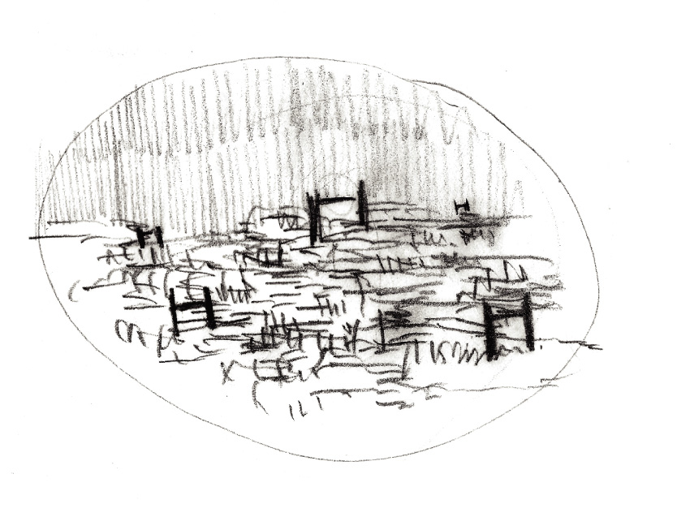

Watermark
Urban element, Sao Tome and Principe, 2012
Project Details
Small community centres comprising basic water and hygiene services (toilets, fountains, baths, etc) that serve as orientation markers in an environment marked by an informal growth of settlements.
São Tomé and Príncipe is a former Portuguese colony and one of the poorest countries in Africa, depending 94% of external economic aid.
The city of São Tomé is characterized by the clear distinction between two ways of urban growth: the first being the remains of the colonial city which comprises the city centre, the second, what we call informal city, is defined by the residential urban sprawl, caused by the unplanned self construction of houses by its inhabitants across time.
The main focus of this project is the creation of a system to connect these two different urbanities since the city centre is currently low in activity by the locals.
Dispersion is the main characteristic of the informal city. As a way to re-unite this scarce urbanity, I thought of creating new smaller community centres near consolidated housing communities that would also provide basic necessity equipment, such as toilets or showers for the people who live in the informal city.
The majority of housing that constitutes the informal urban tissue has no direct access to drinking, clean water. The only public toilet that can be used by these people is located in the city centre and its capacity is not enough to fulfil the demand.
Within the informal city there is no clear orientation or direction since its matrix of growth is organic. Thus, this equipment was also thought as a tool to mark the territory so that people that live faraway can find it easily in the skyline.
The development of this equipment is thought as a growing network system. The ultimate goal is to provide these functions in an individual scale once the city keeps developing its drainage system.
- 